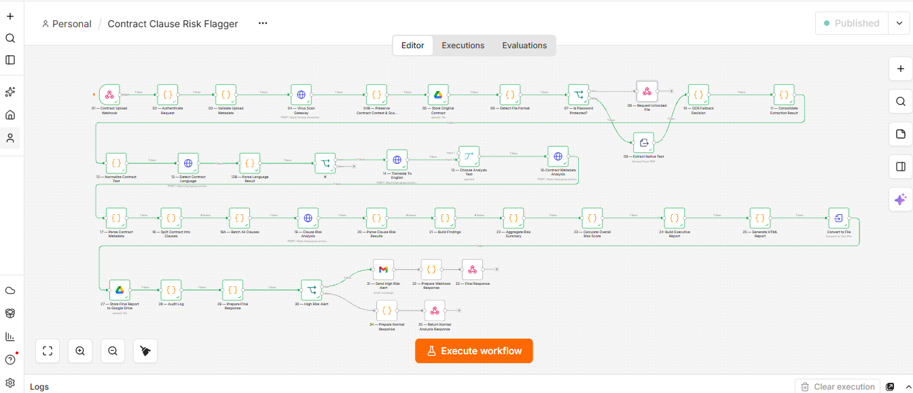
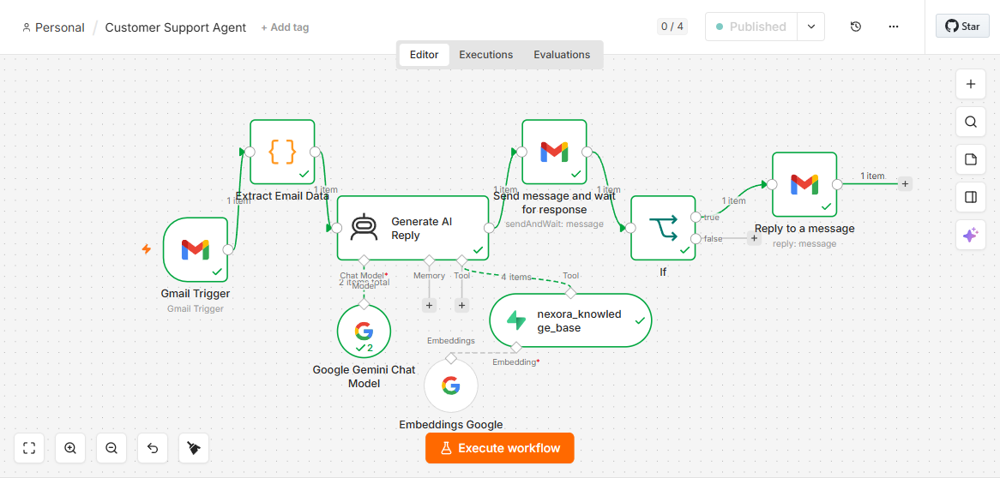
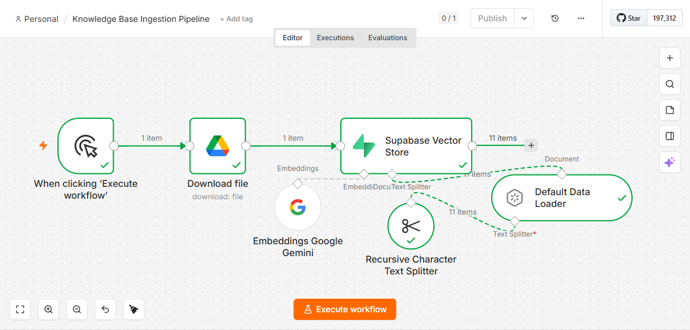

Selected work
Contract Clause Risk Flagger
An API that reads a contract, scores the risk of each clause, and alerts you when the risk is high.

The full workflow in n8n.
- Problem
- Reviewing contracts by hand is slow, and risky clauses are easy to miss.
- What it does
- Receives a contract through a webhook, extracts and cleans the text, detects the language and translates to English when needed, pulls out key details such as type, parties, dates and jurisdiction, then splits the contract into clauses. An LLM rates each clause, a scoring step calculates the overall risk, and the result is saved as an HTML report in Google Drive, written to an audit log, and returned as a JSON response. A Gmail alert goes out for HIGH or CRITICAL results.
- Built with
- n8n, Groq LLM, Google Drive, Gmail, webhooks, REST APIs, JavaScript, JSON
Sample test run: 9 clauses analyzed, overall risk CRITICAL (score 88.33). The highest-risk clause was Limitation of Liability. This is one test execution, shown to demonstrate the output format.
RAG Email Support Agent
An email support agent that answers customer questions from a company knowledge base, and sends nothing until a human approves.

The live support workflow in n8n.
- Problem
- Support teams answer the same questions about pricing, billing, accounts and policies again and again.
- What it does
- A Gmail trigger picks up unread emails that carry a support label. A code step cleans each message into sender, subject and body. An AI agent searches the knowledge base for the four most relevant passages, drafts a reply using only what it found, and escalates politely when the answer is not there. The draft goes to a reviewer by email with Approve and Decline buttons. On approval, the reply is sent in the same email thread. On decline, nothing is sent.
- Knowledge base
- A separate one-time ingestion workflow loads a PDF from Google Drive, splits it into overlapping 1,000-character chunks, embeds them with Gemini, and stores them in Supabase. The demo knowledge base covers a sample SaaS product called TaskFlow Pro: plans and pricing, billing, account and technical FAQs, refund policy, security and escalation.
- Built with
- n8n, Google Gemini (chat model and gemini-embedding-001 embeddings), Supabase pgvector with a match_documents SQL function, Gmail API, n8n AI Agent, Send and Wait for Response (human approval)
- Limits
- Answers come only from the knowledge base, so account-specific questions still need a person. Every reply waits for approval, which trades speed for safety.
- Status
- Tested end to end.

The ingestion workflow that fills the knowledge base.
Project 3: TO BE CONFIRMED
Name, one-line summary, screenshot, tools and demo link to be added.